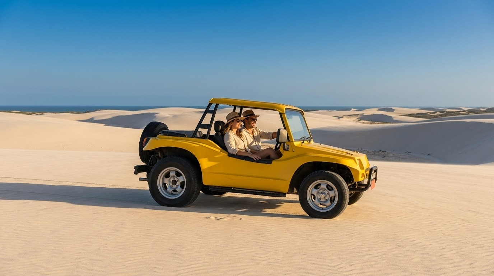
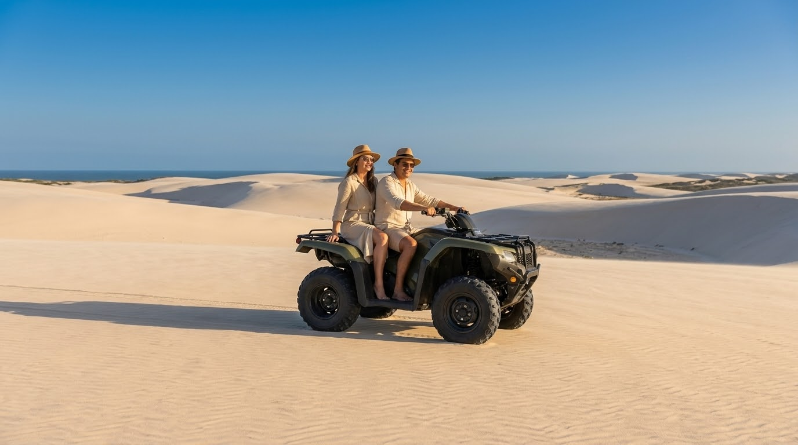
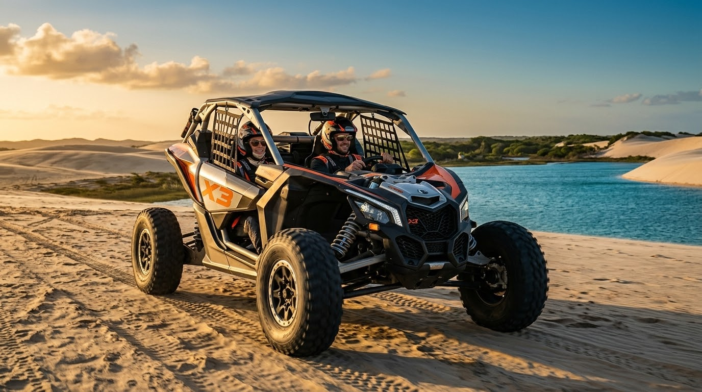
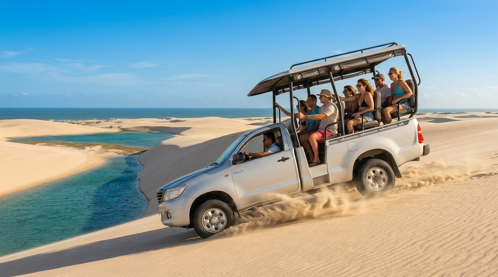

Tudo o que você precisa para viver o melhor de Jericoacoara em um só lugar. Hospedagens • Passeios • Gastronomia • Experiências
Encontre os melhores lugares, experiências e parceiros locais selecionados para você aproveitar Jericoacoara do seu jeito.
Pousadas e hotéis selecionados para diferentes estilos de viagem.
Ver hospedagensBuggy, quadriciclo, UTV e 4x4 por lagoas, dunas e pôr do sol.
Explorar passeiosPescados, frutos do mar, sabores locais e experiências gastronômicas de Jeri.
Descobrir gastronomiaKitesurf, surf, wingfoil, passeios de barco e experiências de bem-estar.
Ver experiênciasJericoacoara é encontro, natureza, liberdade e descoberta. Nosso propósito é conectar você ao melhor que esse paraíso tem para oferecer.
Queremos reunir em um só lugar hospedagens, passeios, gastronomia, transporte, experiências, eventos e parceiros locais para tornar sua viagem mais simples e especial.
O paraíso começa aqui.
Do planejamento à experiência no destino, a Jericoacoara Paradise nasceu para ajudar você a viver o melhor da vila.
Encontre hospedagens para diferentes estilos e orçamentos.
Descubra os principais roteiros e experiências de Jeri.
Transfer, aeroporto, transporte terrestre e informações úteis.
Momentos especiais selecionados para tornar sua viagem única.
Explore Jericoacoara e seus principais roteiros. Escolha sua aventura e encontre a experiência ideal para sua viagem.

Clássico de JeriO clássico de Jeri entre dunas, lagoas e paisagens inesquecíveis.
Ver passeio
LiberdadeLiberdade para explorar Jeri de um jeito mais aventureiro.
Ver passeio
AventuraPotência e conforto para viver as dunas com mais emoção.
Ver passeio
ConfortoConforto para conhecer Jeri com família, amigos ou em passeio privativo.
Ver passeioDescubra Jericoacoara em um dos passeios mais tradicionais da vila. Escolha o roteiro ideal para sua experiência.
Conheça alguns dos principais cartões-postais do lado leste de Jericoacoara.
Ver passeioViva uma experiência especial pela região da Barrinha e seus cenários naturais.
Ver passeioExplore Jericoacoara com mais aventura e liberdade. Escolha o roteiro ideal para viver uma experiência inesquecível.
Explore as principais atrações do lado leste de Jericoacoara de quadriciclo.
Ver passeioConheça dunas, praias e paisagens incríveis do lado oeste de Jericoacoara.
Ver passeioViva uma experiência especial pela região da Barrinha de quadriciclo e descubra paisagens incríveis.
Ver passeioConheça Jericoacoara com conforto, segurança e praticidade. Escolha o roteiro ideal para sua família, amigos ou passeio privativo.
Conheça as principais atrações do lado leste de Jericoacoara em veículo 4x4.
Ver passeioExplore dunas, praias e paisagens incríveis do lado oeste de Jericoacoara em 4x4.
Ver passeioViva uma experiência especial pela região da Barrinha com conforto em veículo 4x4.
Ver passeioEm breve você poderá montar sua viagem, comparar experiências e encontrar os melhores parceiros de Jericoacoara diretamente pelo nosso portal.
Quero conhecer Jeri